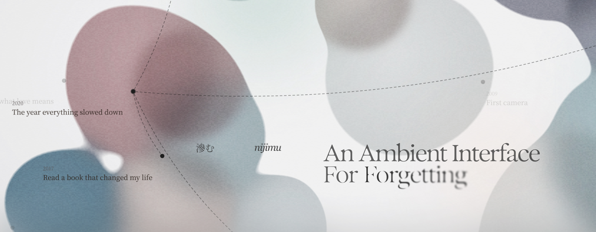

nijimu 滲む
UI / UX, Web Dev
Backnijimu is a speculative memory wellness tool that treats past experiences as something that dissolves into who you are becoming rather than something to archive or forget.
Instead of freezing memory as a static record, the product invites users to let recollection seep, reshape, and reappear as living form—through recording, transcription, and gesture-driven sculpting of memory artifacts.
Developed alongside my wonderful teammates, Echo Zhou, Mavis Zhang, and Yokis Bai.
-
Duration
Feb 2026 - Present
(Currently in phase 2 development) -
Tools
Figma, Cursor
-
Role
Design engineer, graphic designer
-
Awards & Recognition
Core77 Design Award
Interaction Design Track · Student 1st Place
Speculative Design Track · Student Notable -
Website
Traversing the memory archive
Transcribing memory into words
Sculpting memory artifacts as living three-dimensional form: real-time hand gesture tracking